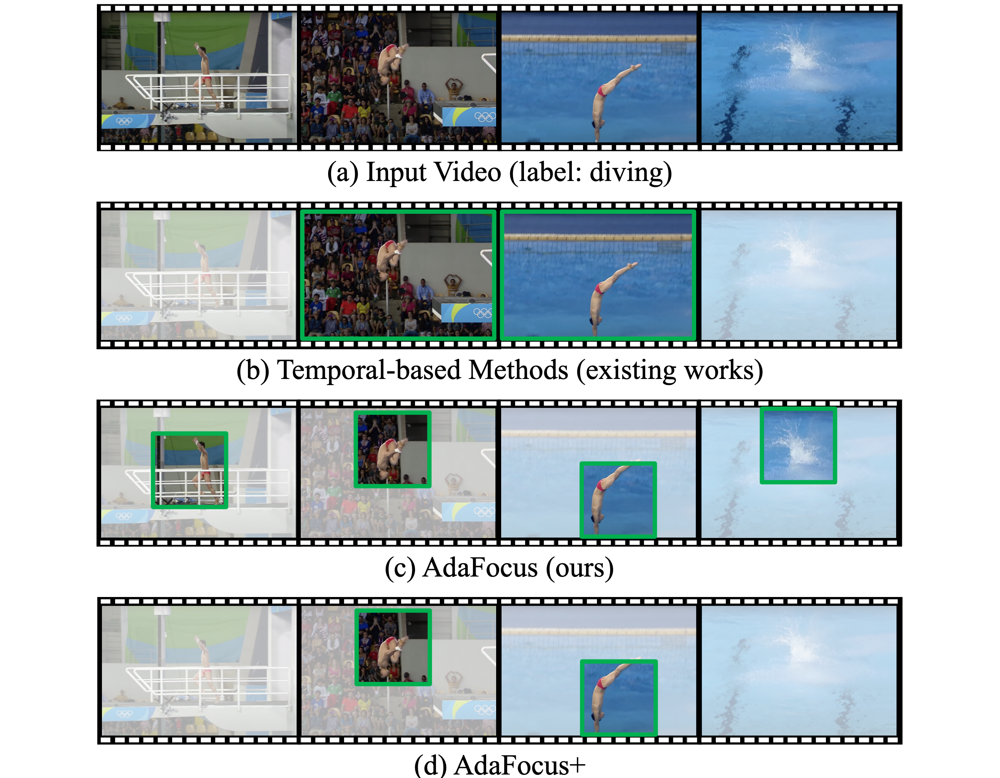

|
Research Experience
News
Awards
Selected Publications

Dynamic Neural Networks: A Survey. [智源社区][机器之心-在线讲座][Bilibili][slides]
Yizeng Han*, Gao Huang*, Shiji Song, Le Yang, Honghui Wang, Yulin Wang.
IEEE Transactions on Pattern Analysis and Machine Intelligence (TPAMI, IF=24.314), 2021
In this survey, we comprehensively review the rapidly developing area, dynamic neural networks. The important research problems, e.g., architecture design, decision making scheme, and optimization technique, are reviewed systematically. We also discuss the open problems in this field together with interesting future research directions.
Yizeng Han*, Gao Huang*, Shiji Song, Le Yang, Honghui Wang, Yulin Wang.
IEEE Transactions on Pattern Analysis and Machine Intelligence (TPAMI, IF=24.314), 2021
In this survey, we comprehensively review the rapidly developing area, dynamic neural networks. The important research problems, e.g., architecture design, decision making scheme, and optimization technique, are reviewed systematically. We also discuss the open problems in this field together with interesting future research directions.

Dynamic Perceiver for Efficient Visual Recognition. [code]
Yizeng Han*, Dongchen Han*, Zeyu Liu, Yulin Wang, Xuran Pan, Yifan Pu, Chao Deng, Junlan Feng, Shiji Song, Gao Huang.
IEEE/CVF International Conference on Computer Vision (ICCV), 2023.
In this paper, we propose Dynamic Perceiver (Dyn-Perceiver), a two-branch structure to explicitly decouple the feature extraction process and the early classification task. We show that early classifiers can be constructed in the classification branch without harming the performance of the last classifier. Experiments on ImageNet demonstrate that Dynamic Perceiver significantly outperforms existing state-of-the-art methods in terms of the trade-off between accuracy and efficiency. Dyn-Perceiver is also a general framework, which can be conveniently implemented on top of any visual backbones.
Yizeng Han*, Dongchen Han*, Zeyu Liu, Yulin Wang, Xuran Pan, Yifan Pu, Chao Deng, Junlan Feng, Shiji Song, Gao Huang.
IEEE/CVF International Conference on Computer Vision (ICCV), 2023.
In this paper, we propose Dynamic Perceiver (Dyn-Perceiver), a two-branch structure to explicitly decouple the feature extraction process and the early classification task. We show that early classifiers can be constructed in the classification branch without harming the performance of the last classifier. Experiments on ImageNet demonstrate that Dynamic Perceiver significantly outperforms existing state-of-the-art methods in terms of the trade-off between accuracy and efficiency. Dyn-Perceiver is also a general framework, which can be conveniently implemented on top of any visual backbones.

Latency-aware Spatial-wise Dynamic Networks. [code] [slide] [poster]
Yizeng Han*, Zhihang Yuan*, Yifan Pu*, Chenhao Xue, Shiji Song, Guangyu Sun, Gao Huang.
Conference on Neural Information Processing Systems (NeurIPS), 2022
In this paper, we use a latency predictor to guide both algorithm design and scheduling optimization of spatial-wise dynamic networks on various hardware platforms. We show that "coarse-grained" spatially adaptive computation can effectively reduce the memory access cost and shows superior efficiency than pixel-level dynamic operations.
Yizeng Han*, Zhihang Yuan*, Yifan Pu*, Chenhao Xue, Shiji Song, Guangyu Sun, Gao Huang.
Conference on Neural Information Processing Systems (NeurIPS), 2022
In this paper, we use a latency predictor to guide both algorithm design and scheduling optimization of spatial-wise dynamic networks on various hardware platforms. We show that "coarse-grained" spatially adaptive computation can effectively reduce the memory access cost and shows superior efficiency than pixel-level dynamic operations.

Learning to Weight Samples for Dynamic Early-exiting Networks. [code][slides][poster]
Yizeng Han*, Yifan Pu*, Zihang Lai, Chaofei Wang, Shiji Song, Junfen Cao, Wenhui Huang, Chao Deng, Gao Huang.
European Conference on Computer Vision (ECCV), 2022
In this paper, we propose to bridge the gap between training and testing of dynamic early-exiting networks by sample weighting. By bringing the adaptive behavior during inference into the training phase, we show that the proposed weighting mechanism consistently improves the trade-off between classification accuracy and inference efficiency.
Yizeng Han*, Yifan Pu*, Zihang Lai, Chaofei Wang, Shiji Song, Junfen Cao, Wenhui Huang, Chao Deng, Gao Huang.
European Conference on Computer Vision (ECCV), 2022
In this paper, we propose to bridge the gap between training and testing of dynamic early-exiting networks by sample weighting. By bringing the adaptive behavior during inference into the training phase, we show that the proposed weighting mechanism consistently improves the trade-off between classification accuracy and inference efficiency.

Spatially Adaptive Feature Refinement for Efficient Inference.
Yizeng Han, Gao Huang, Shiji Song, Le Yang, Yitian Zhang, Haojun Jiang.
IEEE Transactions on Image Processing (TIP, IF=11.041), 2021
We propose to perform efficient inference by adaptively fusing information from two branches: one conducts standard convolution on input features at a lower resolution, and the other one selectively refines a set of regions at the original resolution. Experiments on classification, object detection and semantic segmentation validate that SAR can consistently improve the network performance and efficiency.
Yizeng Han, Gao Huang, Shiji Song, Le Yang, Yitian Zhang, Haojun Jiang.
IEEE Transactions on Image Processing (TIP, IF=11.041), 2021
We propose to perform efficient inference by adaptively fusing information from two branches: one conducts standard convolution on input features at a lower resolution, and the other one selectively refines a set of regions at the original resolution. Experiments on classification, object detection and semantic segmentation validate that SAR can consistently improve the network performance and efficiency.

Resolution Adaptive Networks for Efficient Inference. [code]
Le Yang*, Yizeng Han*, Xi Chen*, Shiji Song, Jifeng Dai, Gao Huang.
IEEE/CVF Conference on Computer Vision and Pattern Recognition (CVPR) 2020.
We focus on the spatial redundancy of images, and propose a novel Resolution Adaptive Network (RANet), which is inspired by the intuition that low-resolution representations are sufficient for classifying “easy” inputs, while only some “hard” samples need spatially detailed information. Empirically, we demonstrate the effectiveness of the proposed RANet in both the anytime prediction setting and the budgeted batch classification setting.
Le Yang*, Yizeng Han*, Xi Chen*, Shiji Song, Jifeng Dai, Gao Huang.
IEEE/CVF Conference on Computer Vision and Pattern Recognition (CVPR) 2020.
We focus on the spatial redundancy of images, and propose a novel Resolution Adaptive Network (RANet), which is inspired by the intuition that low-resolution representations are sufficient for classifying “easy” inputs, while only some “hard” samples need spatially detailed information. Empirically, we demonstrate the effectiveness of the proposed RANet in both the anytime prediction setting and the budgeted batch classification setting.

Adaptive Rotated Convolution for Rotated Object Detection.
Yifan Pu*, Yiru Wang*, Zhuofan Xia, Yizeng Han, Yulin Wang, Weihao Gan, Zidong Wang, Shiji Song, Gao Huang.
IEEE/CVF International Conference on Computer Vision (ICCV) 2023.
We propose adaptive rotated convolution (ARC) for rotated object detection. In the proposed approach, the convolution kernels rotate adaptively according to different object orientations in the images. The ARC module can be plugged into any backbone networks with convolution layer. Our work achievs SOTA performance on the DOTA benchmark.
Yifan Pu*, Yiru Wang*, Zhuofan Xia, Yizeng Han, Yulin Wang, Weihao Gan, Zidong Wang, Shiji Song, Gao Huang.
IEEE/CVF International Conference on Computer Vision (ICCV) 2023.
We propose adaptive rotated convolution (ARC) for rotated object detection. In the proposed approach, the convolution kernels rotate adaptively according to different object orientations in the images. The ARC module can be plugged into any backbone networks with convolution layer. Our work achievs SOTA performance on the DOTA benchmark.

Adaptive Focus for Efficient Video Recognition. [code]
Yulin Wang, Zhaoxi Chen, Haojun Jiang, Shiji Song, Yizeng Han, and Gao Huang.
IEEE/CVF International Conference on Computer Vision (ICCV Oral) 2021.
In this paper, we explore the spatial redundancy in video recognition with the aim to improve the computational efficiency. Extensive experiments on five benchmark datasets, i.e., ActivityNet, FCVID, Mini-Kinetics, Something-Something V1&V2, demonstrate that our method is significantly more efficient than the competitive baselines.
Yulin Wang, Zhaoxi Chen, Haojun Jiang, Shiji Song, Yizeng Han, and Gao Huang.
IEEE/CVF International Conference on Computer Vision (ICCV Oral) 2021.
In this paper, we explore the spatial redundancy in video recognition with the aim to improve the computational efficiency. Extensive experiments on five benchmark datasets, i.e., ActivityNet, FCVID, Mini-Kinetics, Something-Something V1&V2, demonstrate that our method is significantly more efficient than the competitive baselines.
Contact
- hanyz18 at mails dot tsinghua dot edu dot cn.
- 616 Centre Main Building, Tsinghua University, Beijing 100084, China.